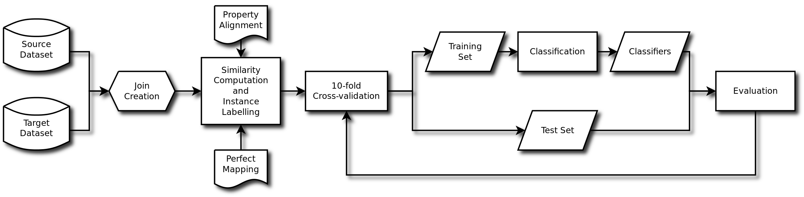

BALLAD
BALLAD is the acronym of Batch Learners Evaluation for Link Discovery, a comparison of supervised machine-learning approaches for discovering new links in the Linked Data cloud. We generated this technical report to provide missing information, as for space reasons some content did not fit in the original published paper:
Tommaso Soru and Axel-Cyrille Ngonga Ngomo, "A Comparison of Supervised Learning Classifiers for Link Discovery", in proceeding of the 10th International Conference on Semantic Systems (SEMANTiCS), 2014 [PDF]
Pipeline overview

Execution runtimes
Execution runtimes for the evaluation are thus presented in the following table.
| Classifier | D1 | D2 | D3 | D4 | D5 | D6 |
|---|---|---|---|---|---|---|
| Linear SVM | 7.16 | 6.93 | 2.67 | 63.94 | 484.29 | 75.44 |
| Linear SMO | 17.07 | 12.93 | 3.77 | 113.40 | 369.20 | 37.16 |
| Polynomial-3 SVM | 5.67 | 6.18 | 2.63 | 162.82 | 1,091.10 | 103.89 |
| Multilayer Perceptron | 15.13 | 16.10 | 3.40 | 96.96 | 376.26 | 41.68 |
| Logistic Regression | 16.11 | 14.91 | 4.61 | 110.12 | 275.94 | 38.48 |
| Linear Regression | 16.04 | 16.21 | 5.02 | 120.54 | 497.43 | 44.50 |
| Naive Bayes | 17.34 | 17.09 | 4.39 | 105.31 | 375.91 | 43.79 |
| Decision Table | 16.68 | 16.44 | 3.78 | 90.99 | 389.35 | 48.87 |
| Random Tree | 12.02 | 11.16 | 2.24 | 53.67 | 347.36 | 34.11 |
| J48 | 21.31 | 15.96 | 6.99 | 131.57 | 98.27 | 38.46 |
Comparison with the state of the art
This table shows a performance comparison overview on the six datasets.
| Framework | D1 | D2 | D3 | D4 | D5 | D6 |
|---|---|---|---|---|---|---|
| refalign (IMEI2010) | 100.00% | 100.00% | 100.00% | -- | -- | -- |
| ASMOV | 100.00% | 93.73% | 85.95% | -- | -- | -- |
| AgreementMaker | 98.99% | 89.16% | 69.92% | -- | -- | -- |
| EAGLE (Unsupervised) | 99.9% | 94.23% | 81.86% | 98.20% | 36.21% | 45.32% |
| MARLIN AD-Tree | -- | -- | -- | 96.40% | 50.50% | 54.80% |
| MARLIN SVM | -- | -- | -- | 97.40% | 59.90% | 70.80% |
| FEBRL SVM | -- | -- | -- | 97.60% | 60.10% | 71.30% |
| PPJoin+ | -- | -- | -- | 91.90% | 41.90% | 47.40% |
| [undisclosed] | -- | -- | -- | 96.20% | 62.10% | 70.70% |
| ACIDS | -- | -- | -- | 97.90% | -- | -- |
| Multilayer Perceptron | 99.50% | 99.50% | 100.00% | 97.43% | 35.58% | 43.49% |